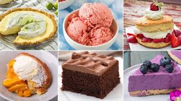
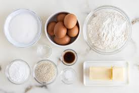
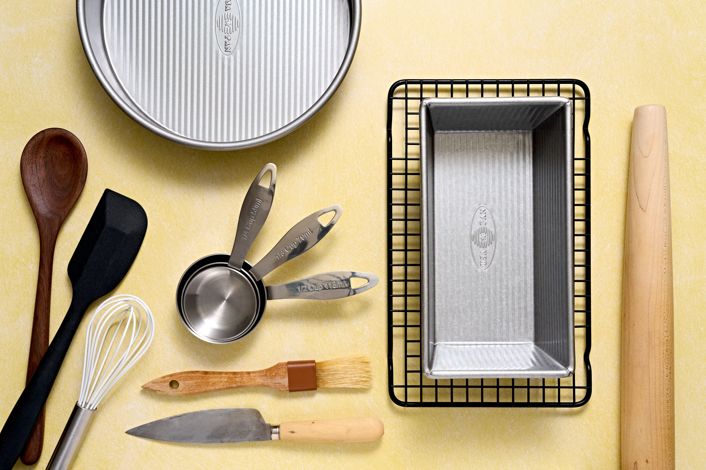

DELICIOUS DESSERT RECIPES

Ingredients needed for every recipe:
- Flour
- Sugar
- Eggs
- Butter
- Milk
- Baking Powder/Soda
- Salt
- Vanilla Extract

Tools needed for every recipe:
- Mixing Bowls
- Measuring Cups & Spoons
- Whisk
- Spatula
- Hand or Stand Mixer
- Sifter
- Baking Pans + Sheets
- Oven

| TSP |
TBSP |
FL OZ |
CUP |
| 3 |
1 |
0.5 |
- |
| 6 |
2 |
1 |
1/8 |
| 12 |
4 |
2 |
1/4 |
| 24 |
8 |
4 |
1/2 |
48 |
16 |
8 |
1 |
96 |
32 |
16 |
2 |
Always preheat your oven-it ensures even baking from the start.
Use room temperature ingredients-especially butter, eggs, and milk for smooth batters
Do not overmix the batter-it can make cakes and muffins dense or tough.
Line baking pans with parchment paper-makes cleanup easier and prevents sticking.
Let dough rest or chill when needed — it improves texture and flavor (like for cookies and pie crusts).